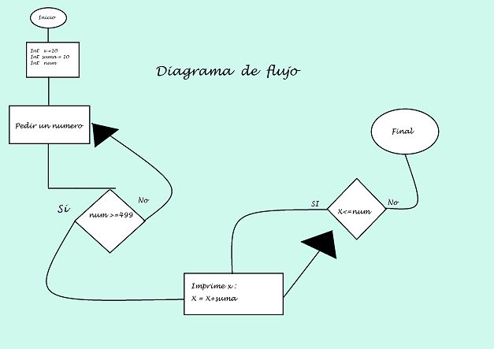

Actividad 1


Personalmente, el tema de c++ y el diagrama de flujo me parecen bastante interesantes, ya que su funcionamiento esta en la totalidad de la logica del programador, si el programador tiene un fallo logico, el programa tambìen lo tendra, ademàs, esta actividad cuando la estaba realizando pense que iba a ser demasiado dificìl, pero no fue asi :)